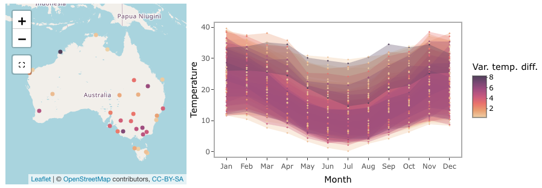

Making a linked map and time series plot
Source:vignettes/interactive-plot.Rmd
interactive-plot.RmdInteractive graphics can be useful because they make it possible to look at the data in multiple of ways on-the-fly. This is especially important for spatio-temporal data, where we would like to interactively connect spatial and temporal displays. This vignette will show you how to make an interactive graphic with a cubble object. We will be using crosstalk::bscols() to create a linked interactive plot of an Australia map, made with leaflet, and a ggplot-turned plotly time series plot:

This vignette assumes you have gone through Get started and are familiar with basic data wrangling in cubble with face_temporal() and face_spatial().
Variation of the diurnal temperature range in Australia
Australia occupies a and different temperature patterns can be observed. Given the maximum and minimum temperature in the climate data in climate_subset, we can compute the average maximum and minimum temperature by month at each location. The difference between the maximum and minimum temperature, the diurnal temperature range, has different variations across the year and its variance will be used as the color for our plot. The codes below compute these variables:
(clean <- climate_subset |>
face_temporal() |>
mutate(month = lubridate::month(date, label = TRUE, abbr = TRUE)) |>
group_by(month) |>
summarise(
tmax = mean(tmax, na.rm = TRUE),
tmin = mean(tmin, na.rm = TRUE),
diff = mean(tmax - tmin, na.rm = TRUE)
) |>
face_spatial() |>
mutate(temp_diff_var = var(ts$diff, na.rm = TRUE)))
#> # cubble: id [30]: nested form
#> # bbox: [114.09, -41.88, 152.87, -11.65]
#> # temporal: month [ord], tmax [dbl], tmin [dbl], diff [dbl]
#> id lat long elev name wmo_id ts temp_diff_var
#> <chr> <dbl> <dbl> <dbl> <chr> <dbl> <list> <dbl>
#> 1 ASN00003057 -16.5 123. 7 cygnet bay 94201 <tibble> 8.27
#> 2 ASN00005007 -22.2 114. 5 learmonth airport 94302 <tibble> 1.80
#> 3 ASN00005084 -21.5 115. 5 thevenard island 94303 <tibble> 0.389
#> 4 ASN00010515 -32.1 117. 199 beverley 95615 <tibble> 5.08
#> 5 ASN00012314 -27.8 121. 497 leinster aero 95448 <tibble> 0.868
#> 6 ASN00014401 -11.7 133. 19.2 warruwi 94139 <tibble> 0.662
#> 7 ASN00014703 -15.7 137. 12.2 centre island 94248 <tibble> 0.314
#> 8 ASN00017123 -28.1 140. 37.8 moomba airport 95481 <tibble> 1.36
#> 9 ASN00018201 -32.5 138. 14 port augusta aero 95666 <tibble> 2.56
#> 10 ASN00022841 -35.7 138. 5 kingscote aero 95807 <tibble> 3.72
#> # … with 20 more rowsLinking with crosstalk
Crosstalk accepts linking between multiple data objects in the same group. Here we create two SharedData objects (one using the nested form and another using the long form), with id as the key and give them the same group name (group = "cubble"):
nested <- clean %>% SharedData$new(~id, group = "cubble")
long <- clean |>
face_temporal() |>
unfold(temp_diff_var) |>
arrange(temp_diff_var) %>%
SharedData$new(~id, group = "cubble")Create maps with leaflet
A basic leaflet map of stations can be created with an underlying map tile (addTiles()) and points to represent stations (addCircleMarkers()):
leaflet(nested, width = 300, height = 300) |>
addTiles() |>
addCircleMarkers()Applying color to the stations requires mapping the variable in the data to the color palette. Here the numerical variable temp_diff_var is mapped onto a sequential color palette, Rocket, with some fine-tuning using colorNumeric(). A popup of station names can be added with the popup argument in addCircleMarkers() and a ~ is needed when specifying variable name in leaflet syntax:
domain <- clean$temp_diff_var
pal <- colorNumeric(
colorspace::sequential_hcl(
"Rocket", n = 7, cmax = 90, rev = TRUE, c2 = 40, l2= 85, c1 = 20, l1 = 30),
domain = domain)
map <- leaflet(nested, width = 300, height = 300) |>
addTiles() |>
addCircleMarkers(color = ~pal(domain), group = "a", radius = 0.1,
popup = ~name, fillOpacity = 1, opacity = 1)Time series plot with plotly
The time series plot can show the temperature band of each station, allowing for visualising the diurnal temperature range by month. We use geom_ribbon() to create a temperature band that shows both the maximum and minimum temperature and add geom_points() to allow selection on the plot:
ts_static <- long %>%
ggplot(aes(x = month, group = id,
fill = temp_diff_var, color = temp_diff_var
)) +
geom_ribbon(aes(ymin = tmin, ymax = tmax), size = 0.1, alpha = 0.3) +
# geom_point(aes(y = tmax), size = 0.1) +
# geom_point(aes(y = tmin), size = 0.1) +
colorspace::scale_fill_continuous_sequential(
"Rocket", n_interp = 7, cmax = 90, rev = TRUE,
c2 = 40, l2= 85, c1 = 20, l1 = 30, name = "Var. temp. diff.") +
colorspace::scale_colour_continuous_sequential(
"Rocket", n_interp = 7, cmax = 90, rev = TRUE,
c2 = 40, l2= 85, c1 = 20, l1 = 30, name = "Var. temp. diff.") +
labs(x = "Month", y = "Temperature") +
theme_bw() +
theme(
panel.grid.major = element_blank(),
legend.position = "bottom"
)The static ggplot object can be turned into a plotly object with ggplotly() and plotly::highlight() enable the selection with box or lasso (on = "plotly_selected"):
ts_interactive <- ggplotly(ts_static, width = 600, height = 300) %>%
highlight(on = "plotly_selected", opacityDim = 0.012)Assemble into a linked plot
crosstalk::bscols() can be thought of as the patchwork for interactive graphics, which arranges multiple interactive graphics in columns.
bscols(map, ts_interactive, widths = c(4, 6))Below is a screenshot of the full graphics:

Making selection to see the linking
The selection built in the linked plot goes in both directions. In the screenshot below, a lasso selection is made on the time series and this links to cygnet bay on the northwest coastline of Australia. The area has a larger temperature range in July than in the summer period (December - February).

Selection on the leaflet map is made through the selection tool below the zoom-in/out bottom on the map. Two selections are made on northern Australia and inland Queensland. Northern Australia has a narrow temperature range constantly 20 degrees throughout the year, while the temperature range in inland Queensland is much larger and there is a clear difference between the summer and winter periods.


Now it is your time to view the tooltip on the map and use the selection to explore weather patterns in Australia!